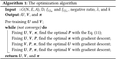

DOI: https://doi.org/10.1145/3178876.3186114
WWW '18: Proceedings of The Web Conference 2018, Lyon, France, April 2018
There are increasing interests in learning low-dimensional and dense node representations from the network structure which is usually high-dimensional and sparse. However, most existing methods fail to consider semantic meanings of links. Different links may have different semantic meanings because the similarities between two nodes can be different, e.g., two nodes share common neighbors and two nodes share similar interests which are demonstrated in node-generated content. In this paper, the former type of links are referred to as structure-close links while the latter type are referred to as content-close links. These two types of links naturally indicate there are two types of characteristics that nodes expose in a social network. Hence, we propose to learn two representations for each node, and render each representation responsible for encoding the corresponding type of node characteristics, which is achieved by jointly embedding the network structure and inferring the type of each link. In the experiments, the proposed method is demonstrated to be more effective than five recent methods on four social networks through applications including visualization, link prediction and multi-label classification.
CCS Concepts: • Information systems → Data mining; Social networks;
ACM Reference Format:
Linchuan Xu, Xiaokai Wei, Jiannong Cao, and Philip S. Yu. 2018. On Exploring Semantic Meanings of Links for Embedding Social Networks. In WWW 2018: The 2018 Web Conference, April 23–27, 2018, Lyon, France. ACM, New York, NY, USA 11 Pages. https://doi.org/10.1145/3178876.3186114
Social networks can meet and even create social needs for human beings as it is very convenient for people to reach out and get connected to others. We can analyze data regarding social network involvement to help improve networks and user experiences. This may explain why there are increasing interests from both industry and academia in personalizing services to users’ interests, behaviors and attributes [14] [5], detecting communities [10, 33], recommending products [23, 43] or friends [12, 34, 35, 36]. However, the network representation, e.g., adjacency matrix, is usually high-dimensional and spare. High-dimensionality makes it inefficient to train data mining models while sparsity makes it not easy to generalize trained models for future usage.
Recently, network embedding [11, 21, 25, 37, 38, 39] has been utilized to learn low-dimensional and dense node representations basically by embedding the network structure in a certain Euclidean space. Although being demonstrated effective to preserve the network structure, almost all existing methods fail to consider semantic meanings of links in a social network where different links may have different semantic meanings. Semantically different links result from different reasons for which links are established and the reasons can be of various types in practice, e.g., two persons share a common university friend and two persons are fans of Star Wars. Hence, semantically different links may indicate nodes expose different types of information in a social network, e.g., the former example mentioned above may indicate the two persons expose information about their education while the latter example may indicate they expose information about their interests. As a result, it is more reasonable to embed the network structure with the semantic meanings of each link considered.
In this paper, we thus take the first step towards exploring semantic meanings of social links in the context of network embedding. Specifically, we propose to categorize social links according to their semantic meanings and learn node representations with semantic concepts. Inspired by homophily principle [18] which suggests links exist between nodes with similarities, we categorize links according to the type of similarities two nodes share. As the first work, this paper only considers two types of coarse-grained similarities, i.e., common neighbors and similar interests demonstrated in node-generated content, which represent two most frequently used types of similarity measurement, i.e., topology-based similarities and node content-based similarities, for two nodes to have a link [1, 15]. If two nodes share common neighbors, the link can be referred to as a structure-close link while if they share interests, the link can be referred to as a content-close link as illustrated in Fig. 1. It is worthy of noting that a particular link can be both structure-close and content-close since the two nodes can have common neighbors and share similar content at the same time.
We further generalize the concept of structure-close links between two nodes that are close in the network structure, e.g., two nodes can be close when they are connected by third-order links or even fourth-order links (second-order links exist between two nodes sharing common neighbors). But we do not set a threshold for the order of links to define the structure-close links because the threshold is not that important in this paper.
The existence of two types of semantic meanings of links suggests that it may not be proper to learn a single representation for each node because they may indicate the existence of two types of node characteristics, e.g., education and interests mentioned above. Education represents the type of characteristics that are intrinsic to nodes while interests represent the type nodes acquire from the particular social environment. The problem with a single representation is determined by the nature of network embedding, i.e., nodes connected by links should be close in the embedding space of interest. Accordingly, two nodes with different types of characteristics may be wrongly presented to be close.
For example, in Fig. 1, since node 5 is connected to node 4 and node 4 is connected to node 1, the representation of node 5 may also be close to node 1 in the embedding space, which may suggest node 5 and node 1 have a potential link. However, if the structure-close link between node 1 and node 4 is established because they share many university alumni while node 5 is not one of the alumni, node 1 and node 5 are not much likely to have a link because they also do not share interests. In this example, we make several assumptions about the links and node-generated content. One may question the assumption that node 1 and node 4 are connected by a structure-close link but do not share content. To validate this assumption, we present density of cosine similarity between tweets of two users connected by a structure-close link whose nodes share neighbors in a Twitter network described in Section 6 and corresponding cumulative density in Fig. 2. We can see there is a large portion of links whose nodes share little or even no common content.
In this paper, we thus propose to learn two representations for each node and render each representation responsible for encoding a particular type of node characteristics. Since content-close links mainly result from sharing similar interests, we name node characteristics exposed in these links as interests, and the corresponding representation as interest representation. For structure-close links resulting from sharing neighbors, we may think each node has an idea of whom the other node is by referring to its neighbors. Hence, we name the other type of node characteristics as identity and the corresponding representation as identity representation. The proposed method is thus referred to as interest and identity representation learning (IIRL).
With the two representations, the problem faced by learning a single representation mentioned above can be solved as follows: node 1 and 4 are presented to be close in the embedding space corresponding to identity representations while node 4 and 5 are close in the space for interest representations. As a result, node 1 may not be close to node 5 because they are far away from each other in both of the spaces. Moreover, with these two salient semantic meanings, the two representations can make natural data mining tasks, e.g., link prediction and classification, more interpretable than single representations without semantic meanings [8].
The idea of learning two representations imposes two major challenges. Firstly, unlike learning a single representation that preserves both interest-related and identity-related characteristics, IIRL has to make sure that these two types of characteristics are preserved where they should be. But each link can be both structure-close and content-close. Hence, the challenge is how to infer the type of node characteristics exposed in each link so that the network structure and semantic meanings of links are well preserved in node representations. Secondly, besides the network structure, we also need to encode node-generated content into interest representations.
To address the first challenge, we infer the responsibility weight for each type of node characteristics given a particular link. The responsibility weights are estimated because characteristics in a particular link can be an arbitrary mixture of interest-related characteristics and identity-related ones. For the second challenge, we use node content as guidance while learning the interest representation as the content has the ground truth about node interests.
The contributions of the paper are summarized as follows:
The development of recent network embedding starts with DeepWalk [21], which employs Skip-gram [19], a language model, to present pairs of nodes reached in truncated random walks to be close in the embedding space. With the success of DeepWalk, there emerge a series of Skip-gram based methods, such as TADW [40] to embed both network structure and node attributes, and node2vec [11] to explore diverse neighborhoods of each node.
There are also many other kinds of methods. LINE [25] is proposed to embed large-scale networks by directly presenting pairs of nodes with first-order or second order connections to be close. GraRep [6] models first-order up to a pre-defined k-order proximities into transition matrices, and then factorizes each transition matrix using SVD. A recent method [41] concludes that modeling high-order proximities can improve the quality of node representations, and then makes improvement to aforementioned models. Besides simply preserving the network structure, some methods also preserve network properties, such as HOPE [20] preserving asymmetric transitivities and M-NMF [30] preserving communities. Some methods [7] [24] [37] [9] even embed heterogeneous networks including more than one types of nodes and edges. Deep learning models have also been applied for network embedding [29]. Most of the methods above are unsupervised learning methods. Semi-supervised methods [28] [42] [13] have also been studied since representations with label information can perform better in subsequent classification tasks.
However, none of the methods mentioned above consider semantic meanings of links in a social network.
A social network with node-generated content is denoted as G(N, E, A), where N is a set of nodes, E is a set of weighted or unweighted, directed or undirected edges. The type of node characteristics, i.e., interest-related characteristics and identity-related characteristics, in each edge is unknown. $A \in \mathbb {R}^{M\times L}$ is a term frequency matrix of attributes extracted from the content where M is the number of nodes and L is the number of attributes. It is assumed that each node content is non-empty.
As a network embedding model, IIRL learns node representations through embedding first-order linkage information and non-linkage information of G(N, E, A) in an Euclidean space. More specifically, each pair of nodes connected by an edge is presented to be close while each pair not connected is presented apart. Since there are two representations for each node, i.e., identity representation and interest representation, there are two corresponding spaces. The closeness of two nodes in the identity space is quantified as follows:
The closeness of two nodes in the identity Euclidean space is quantified as the probability of a structure-close edge between them, where the probability is defined as follows:
Eq. (1) is symmetric in terms of node representations. For directed edges, the asymmetric property is not considered as LINE [25] and EOE [37] do. We may consider it in future work. Interest closeness is similarly defined. The closenesses can be quantified in this way because larger probabilities indicate larger inner products of two vectors, and the inner product is a measurement of closeness of two points in Euclidean space. Moreover, the closeness quantified in this way is to facilitate the formulation of an optimization objective presented in the following section.
Although the definition of closeness is similar to that of LINE(1st) [25] and EOE [37], IIRL further assigns a responsibility weight to the type of node characteristics in each edge, which is reflected on the overall closeness. The overall closeness of two nodes is summarized over weighted identity closeness and weighted interest closeness as follows:
Identity proportion of a linkage relationship denoted as $\pi _{ij_{u}}$ quantifies the responsibility weight of identity-related characteristics in the link between node i and node j. Similarly, interest proportion of a linkage relationship denoted as $\pi _{ij_{v}}$ quantifies the responsibility weight of interest-related characteristics. As there are only two types of node characteristics as indicated in the introduction, $\pi _{ij_{u}}+\pi _{ij_{v}}=1$ .
According to Eq. (2), to correctly estimate the responsibility weights of the linkage relationship between two nodes, interest proportion is expected to be larger than identity proportion when the probability estimated by interest representations is larger than that estimated by identity representations, and vice versa. Otherwise, the weighted sum of the probability is less optimal. This expectation is consistent with our intuition that the stronger one out of two characteristics is more likely to dominate the relationship of two persons, e.g., the same attitude to Golden State Warriors or Cleveland Cavaliers may be more likely than the same born state, even the same university of two US citizens to dominate their relationships. And this intuition sheds light on how IIRL infers the link type.
To obtain optimal node representations and link types for embedding the network structure, the optimization objective can be formulated according to maximum likelihood estimation since closeness is quantified by a concept of probability. Hence, the network structure embedding is formally formulated as the following problem:
By taking negative natural logarithm of Eq. (3), the problem is equivalent to the following minimization problem:
We also illustrate the proposed network structure embedding by a four-layer feedforward neural network model as presented in the middle dashed box of Fig. 3. The input are node representations. By manipulating the connections between the input layer and the first hidden layer, the first hidden layer realizes dimension-wise multiplication of identity representations of two nodes and multiplication of interest representations. The second hidden layer produces identity closeness and interest closeness by employing sigmoid function as the activation function. The output layer produces the overall closeness by summarizing weighted closenesses shown in Eq. (2).
Since user-generated content explicitly indicates user's interests, the interest representation of each node should comply with its content. To achieve this purpose, we regularize interest representations to node content through the following minimization:
By directly combining Eq. (4) for structure embedding and Eq. (5) for content embedding, the overall loss can be drawn as follows:
Since larger probabilities of edges indicate larger inner products of node representations suggested by Eq. (1), nodes connected by edges are expected to be close in the embedding space. More specifically, nodes connected by structure-close edges should be close in the identity space such as node 1, 2, 3, and 4 in Fig. 3 while nodes connected by content-close edges should be close in the interest space such as node 4 and 5, node 5 and 6. Moreover, node 1 and 3 are close in both identity space and interest space. In this sense, the network structure is well preserved in node representations.
$\mathcal {L}(U, V, P, \pi)$ is not jointly convex over the four input variables. Hence, we replace it with a sequence of easier optimizations by an alternating optimization algorithm [4]. More specifically, the minimization problem can be alternatingly solved with respect to one of the four variables at a time with other variables fixed. We then solve each variable according to the corresponding problem.
Problem (1): The optimization problem for U or V can be solved by gradient-based algorithms, e.g., gradient descent and L-BFGS. The derivative w.r.t U can be obtained as follows:
Problem (2): Similarly, the derivative w.r.t V is as follows:
Problem (3): With respect to P, the optimization objective turns into solving the following problem:
Problem (4): W.r.t. π, rather than solving it directly, it is easier to optimize unconstrained ”softmax weights” defined as follows:
Hence, the derivative w.r.t $\xi _{ij_{u}}$ is expressed as follows:
Similarly, the derivatives w.r.t $\xi _{hk_{u}}$ and w.r.t $\xi _{hk_{v}}$ are expressed as follows: $\frac{\partial \mathcal {L}(U,V,P,\pi)}{\partial \xi _{hk_{u}}}=$

The workflow of jointly solving these four variables is presented in Algorithm 1. Algorithm 1 starts with pre-training U and V, which is performed to obtain good initialization values for U and V as introduced below, and the parameter k is used in the pre-training. The parameter negative ratio is the ratio of the number of ehk to that of eij as used in negative sampling by LINE [25]. It is observed that Algorithm 1 works well with this parameter in the experiments. For all gradient descents, the learning rate in each iteration is obtained by backtracking line search [2].
Pre-training is important as it can initialize a model to a point in parameter space that renders the learning process more effective [3]. In our case, to make the learning process more effective, U should be pre-trained to take values reflecting identity-related information as expected, and V should take values reflecting interest-related information. As identity-related information may only be recovered from the network structure given G(N, E, A), we thus pre-train U by embedding the network structure without considering the link type. Based on the proposed network structure embedding, the loss function for pre-training U can be quantified as follows: L(U) =
As for V, because we may not know which links are content-close, we thus pre-train V by embedding node content. To make this problem simple, we construct a k-nearest neighbor graph of the nodes so that the method for pre-training U can be directly applied to pre-train V. The links in the kNN graph are established from each node to its first-k neighbors with a weight of 1. The similarity of two nodes is quantified by cosine similarity of their content.
Complexity: Referring to the derivatives, the complexity of Algorithm 1 is dominated by learning node representations from the network structure and the term frequency matrix constructed from node content. Taking the identity representations as an example, the complexity of learning from the network structure is O(Du |E|) due to negative sampling and the complexity of learning from the term frequency matrix is O(Du |N|L) where L is the number of terms. Since social networks are usually sparse, the scalability to large-scale networks can be guaranteed.
Convergence: Algorithm 1 is essentially a block-wise coordinate descent algorithm [27] with U, V, π and P as block variables. So convergence can be guaranteed based on the general proof of convergence for block-wise coordinate descent. Moreover, in the experiments, we observe Algorithm 1 converges fast in terms of the outer iterations.
Four social networks studied in the experiments are as follows:
Network statistics are summarized in Table 1.
| Network | DBLP | BlogCatalog | Flickr | |
|---|---|---|---|---|
| #Nodes | 6482 | 9244 | 7857 | 6318 |
| #Edges | 19265 | 323922 | 137649 | 404085 |
| #Attributes | 8298 | 10360 | 5351 | 8523 |
| #Groups | 4 | N/A | 15 | 5 |
| Type | weighted undirected | unweighted directed | unweighted undirected | unweighted undirected |
Five recent network embedding models are employed as baselines, which are DeepWalk [21], LINE [25], and node2vec [11] for embedding only the network structure, TADW [40] and EOE [37] for embedding both the network structure and node content.
In the experiments, the dimension of both identity representation and interest representation is set as 128 as used in all the baselines. Because there are two representations for each node in both IIRL and TADW, the two representations are concatenated as one representation in the evaluation except for the representations of IIRL used in link prediction. Though the dimension of node representation of both IIRL and TADW is two times of that of other baselines, a larger dimension actually does not bring advantages as suggested in the parameter sensitivity of this paper, of LINE, of TADW, and of EOE. Other settings are that $\xi _{ij_{u}}$ and $\xi _{ij_{v}}$ are initialized as 0.5, k for pre-training is set as top 1% of all the nodes, negative ratio is set as 5 as used in LINE, the regularization coefficient is set as 1, commonly used settings are used in backtracking line search, and the relative loss that determines the convergence of Algorithm 1 is set as 0.001.
This section presents a visual evaluation of the effectiveness of the identity representations and interest embeddings by visualizing them in a two-dimension space. Firstly, we present locations of 11 nodes from the Twitter network in identity space and interest space in Fig. 4, which is obtained by t-SNE [16]. The true user IDs in Twitter for these 11 nodes are listed in the following Table 4. The relationships between them are that 1&2, 3&4, and 5&6 have many common friends, but have shown little or no similar interests. This may suggest that links between them may be purely structure-close. 6&7, 8&9, and 10&11 show similar interests but no or one common neighbor, which may suggest the interest proportion of these links is larger than identity proportion. Moreover, node 5, 6 and 7 is a real example of the motivation scenario in Fig. 1 in the introduction. As suggested by the model illustration in Fig. 3, 1&2, 3&4 and 5&6 should be close in the identity space and far away in the interest space while 6&7, 8&9, and 10&11 should have the exactly opposite pattern. Moreover, node 7 should be far away from node 5 in both spaces even though they share node 6 as a common neighbor. By examining Fig. 4, we find the representations work as expected.
Secondly, we visualize representations in network scale. The DBLP co-authorship network is studied as it is a well-structured professional network. The results are presented in Fig.5.
Co-authorships tend to take place within each research field, but the selected four fields, i.e., DB, DM, ML, and IR, are closely related. In other words, many co-authorships may be cross-filed, which implies that the co-authorships alone may not be sufficient to distinguish researchers from different fields. Hence, representations learned from the network structure may not be able to visually distinguish authors from one field to another. And this is indeed demonstrated by all the models that can only embed the network structure. But TADW, EOE, and the proposed IIRL work much better by combining information of the network structure and of the node content as illustrated in Fig. 5(5), Fig. 5(6), and Fig. 5(7), respectively. This is because node content demonstrates research interests, which are different among these four fields as illustrated in Fig. 5(8) and Fig. 5(9).
The proposed IIRL and TADW perform a slightly better than EOE, which may because research interests are directly combined with representations learned from the network structure in IIRL and TADW while EOE can only incorporate interests in an implicit way. Though it is not easy to visually tell which one of IIRL and TADW performs better, the way of IIRL to combine the network structure and node content is more reasonable. TADW performs the combination by approximating the entire network structure through node content. Analogously, IIRL performs the approximation selectively, which is motivated by the fact that different edges have different proportions of interest characteristics and identity characteristics. IIRL performs the selection through inferring responsibility weights so that node characteristics can be embedded in appropriate representations other than are blindly embedded in identity representations or interest ones. The effectiveness of this selective embedding is demonstrated by the observation that final interest representations in Fig. 5(9) perform better than pre-trained ones in Fig. 5(8). The performance of how correctly IIRL infers responsibility weights is evaluated via link type inference below.
As there is no ground truth about the identity proportion and interest proportion of each edge given G(N, E, A), we define four types of links in terms of common neighbors and the relationship in interests in Table 2. The neighbor relationship is defined in the pre-training section. Type I corresponds to purely structure-close social links, Type II corresponds to purely content-close social links, and Type III corresponds to both structure-close and content-close links while Type IV remains uncertain as there is no clear clue about the type of node characteristics. Bottom of Table 1 lists the statistics of four types of links of the Twitter network.
It is worthy of noting that the distribution of Twitter links over the four types depends on the choice of the number k in the k-nearest neighbor network. The number k determines the number of links composed of nodes with neighbor relationship in interests. Here, the k is set as 1% of nodes, a commonly used number for constructing kNN networks in network embedding [22]. As a result, the number of neighbor links is 109320, taking up 33.7% of all the links. The number is reasonable as there more than 60% of links whose endpoint vertices share few interests as indicated by small similarities (e.g., ≤ 0.2) in the cumulative density plot of Fig. 2.
| Type I | Type II | Type III | Type IV | |
|---|---|---|---|---|
| Sharing neighbors | $\checkmark$ | × | $\checkmark$ | × |
| Not sharing neighbors | × | $\checkmark$ | × | $\checkmark$ |
| Neighbor in interests | × | $\checkmark$ | $\checkmark$ | × |
| Non-neighbor in interests | $\checkmark$ | × | × | $\checkmark$ |
| 208598 | 845 | 108475 | 6014 |
| Predicted Type I | Predicted Type II | Recall Rate | |
|---|---|---|---|
| True Type I | 181751 | 26847 | 87.13% |
| True Type II | 640 | 205 | 75.73% |
| Precision | 99.65% | 99.24% |
| Types | User ID (R. N.) | #C. F. | N. I. | Common Attributes | $\pi _{ij_{u}}$ | $\pi _{ij_{v}}$ |
|---|---|---|---|---|---|---|
| 4119741 (1), 32423136 (2) | 22 | × | @TheAtlantic | 0.82 | 0.18 | |
| Type I | 155969606 (3), 65913144 (4) | 23 | × | N/A | 0.89 | 0.11 |
| 618593 (5), 157218534 (6) | 9 | × | N/A | 0.87 | 0.13 | |
| Type II | 157218534 (6), 387210978 (7) | 0 | $\checkmark$ | #StarWars, @darthvader, @DepressedDarth | 0.15 | 0.85 |
| 85815410 (8), 23508439 (9) | 1 | $\checkmark$ | #Cowboys, #Patriots, #NFLDraft | 0.12 | 0.88 | |
| 11348282 (10), 77351627 (11) | 1 | $\checkmark$ | #gamedev, @jonjones, @polycount, @GearboxSoftware | 0.28 | 0.72 |
We can quantitatively evaluate how IIRL correctly infers Type I and Type II links in a way that Type I links should have larger values of $\pi _{ij_{u}}$ while Type II links should have larger values of $\pi _{ij_{v}}$ . For Type III links, we may not be able to do a quantitative evaluation but we can do a qualitative evaluation based on the difference between $\pi _{ij_{u}}$ and $\pi _{ij_{v}}$ , which should not be too large because there may not be a dominant factor for Type III links.
The confusion matrix on inferring Type I and Type II social links is presented in Table 3. It shows both Type I and Type II links can be accurately inferred, and the performance on inferring Type I links is better. To verify this performance, three representatives of accurately predicted Type I links and three of Type II links are presented in Table 4. We can see from Table 4 that all estimated $\pi _{ij_{u}}$ and $\pi _{ij_{v}}$ are consistent with link types. Also, for Type I links, besides there are many common friends shared by the two users, the friendship is bi-directional, which largely supports the claim that two users connected by structure-close links may have an idea of whom each other is in the real world.
To evaluate the performance on inferring Type III links, we present the distribution of absolute differences between $\pi _{ij_{u}}$ and $\pi _{ij_{v}}$ and the cumulative density plot in Fig. 6. The PDF plot shows the majority of differences are small, and the CDF plot shows around 70% of differences are within 0.2. Because it is expected that Type III links may not have a dominant type of characteristics, the identity proportions should take values similar to that of the interest proportions. To this point, it is concluded that the proposed IIRL model can accurately infer link types, and responsibility weights.
After inferring link types, we can build social profiles so as to understand users’ social behaviors and the social network. The social profile of a user refers to information about his/her friendships with other users. Social profiling is a by-product of learning representations because IIRL is able to infer the type of social links of which all the baselines, in contrast, are not capable.
According to the link types, we categorize users into five groups as illustrated in Table 5, where only identity-exposing users are those who only have structure-close links, and other terms are defined similarly. It is worthy of noting that structure-close links here are inferred by IIRL during the training process, and they are associated with relatively larger identity proportion $\pi _{ij_{u}}$ compared with interest proportion $\pi _{ij_{v}}$ . Social profiles in network scale by summarizing over users are also presented in Table 5. Two interesting observations are drawn as follows:
| Flickr | Blog | DBLP | |||
|---|---|---|---|---|---|
| Only identity-exposing | 240 | 1359 | 403 | 1378 | |
| #Users | Only interest-exposing | 1837 | 1170 | 79 | 1937 |
| More Identity-exposing | 3389 | 3876 | 5120 | 1486 | |
| More Interest-exposing | 3595 | 1227 | 590 | 1642 | |
| Equally exposing | 116 | 259 | 126 | 39 | |
| #Links | structure-close | 218158 | 125220 | 352531 | 21568 |
| content-close | 105764 | 12429 | 53157 | 16962 |
| Models | BlogCatalog | Flickr | Twitter | DBLP | |||||||||
|---|---|---|---|---|---|---|---|---|---|---|---|---|---|
| 20% | 40% | 60% | 80% | 20% | 40% | 60% | 80% | 20% | 40% | 60% | 80% | 100% | |
| DeepWalk | 69.92 | 76.44 | 79.32 | 81.32 | 71.79 | 77.04 | 78.30 | 78.69 | 96.25 | 97.62 | 97.68 | 97.80 | 73.26 |
| TADW | 67.12 | 70.67 | 73.02 | 74.97 | 62.59 | 65.04 | 68.10 | 70.16 | 94.25 | 95.24 | 95.82 | 96.90 | 66.26 |
| LINE(1st) | 53.61 | 73.70 | 65.36 | 79.60 | 61.31 | 66.31 | 69.10 | 70.83 | 92.56 | 95.90 | 97.02 | 97.70 | 62.45 |
| LINE(2nd) | 65.77 | 68.25 | 70.47 | 72.05 | 66.25 | 68.02 | 68.66 | 68.79 | 91.04 | 94.84 | 96.12 | 96.63 | 76.04 |
| node2vec | 73.69 | 76.99 | 77.75 | 78.54 | 71.20 | 70.80 | 70.71 | 71.75 | 96.12 | 97.64 | 97.68 | 97.68 | 71.59 |
| EOE | 78.28 | 83.36 | 86.81 | 88.94 | 74.10 | 77.36 | 78.69 | 79.39 | 96.93 | 97.79 | 98.01 | 98.09 | 76.19 |
| IIRL | 82.30 | 86.54 | 90.26 | 91.92 | 78.62 | 79.41 | 82.03 | 81.29 | 97.60 | 98.69 | 98.37 | 98.45 | 77.21 |
| Models | Micro-F1 | Macro-F1 | ||||
|---|---|---|---|---|---|---|
| Blog | Flickr | DBLP | Blog | Flickr | DBLP | |
| DeepWalk | 58.42 | 66.52 | 78.48 | 57.86 | 55.71 | 77.46 |
| TADW | 63.62 | 67.96 | 84.68 | 61.55 | 58.58 | 83.96 |
| LINE(1st) | 59.55 | 63.95 | 77.62 | 58.72 | 56.92 | 76.51 |
| LINE(2nd) | 57.60 | 66.07 | 75.93 | 56.95 | 56.55 | 75.45 |
| node2vec | 55.85 | 57.76 | 76.96 | 55.73 | 48.72 | 75.66 |
| EOE | 62.95 | 67.86 | 84.56 | 62.03 | 58.62 | 83.32 |
| IIRL | 66.08 | 68.79 | 85.30 | 63.53 | 59.36 | 84.77 |
Link prediction is usually performed by measuring similarities of pairs of nodes [15]. Inner product of two node representations normalized by sigmoid function is employed as the similarity measurement for all the baselines. For IIRL, the similarity is the summary of identity similarity and interest similarity weighted by identity proportion and interest proportion. On Twitter, BlogCatalog, and Flickr networks, we conduct 4 runs of experiments in which different ratios of links are used as training links and the remaining ones as test links. On the DBLP co-authorship network, new co-authorships occur from 2010 to 2012 are used as test links. For all networks, the same number of negative links are randomly sampled for the evaluation purpose. For IIRL, if a particular pair of nodes does not appear during the training process, the identity proportion and interest proportion are both set as initialized 0.5. The performance measured on AUC score is presented in Table 6.
Table 6 shows the proposed IIRL model consistently outperforms all baselines on all datasets. The reason behind the superior performance of IIRL over DeepWalk, LINE and node2vec is that a considerable number of links should be content-close as demonstrated previously and IIRL can capture users’ interests exhibited in user-generated content. The superior performance over TADW is because not all links are content-close. Moreover, TADW even under-performs DeepWalk except on the Twitter network which has more content-close links than the other three networks. Hence, it not appropriate to approximate the entire network structure by node content like TADW but to approximate the content-close links by node content like the proposed IIRL. The superior performance over EOE is because interests are more explicitly employed in inferring new interactions. Moreover, the unexpected consequence of learning a single representation for two types of node characteristics mentioned in the introduction may also explain the inferior performance of all the baselines.
Interpretability on link prediction: Besides being more accurate, IIRL can provide explanations for each piece of link prediction, e.g., it is established because two users know each other in the real world or because two users share similar interests. This can be easily obtained by referring to identity similarity and interest similarity because the larger similarity is expected to be associated with the larger proportion as discussed in Definition 4.
The groups are used as labels for the evaluation. We employ the binary-relevance SVM with polynomial kernel as the classifier, and the performance in terms of Micro-F1 and Macro-F1 obtained by 5-fold cross validation is presented in Table 7. Similarly, IIRL outperforms all the baselines. An intuitive explanation for the superior performance can be obtained from the visualization of the DBLP network in Fig. 5. Specifically, as nodes of the same group are distributed closer to each other in IIRL than in baselines, the decision boundary estimated in SVM can be more effective.
In this section, we study the performance w.r.t to the dimension of representations and the number k used in kNN networks. Fig. 7(a) presents the performance on the link prediction task for the DBLP dataset w.r.t different dimensions of representations. It shows that the proposed IIRL is not much sensitive to the dimension. Fig. 7(b) presents the performance on the link prediction task for the DBLP dataset w.r.t k. It shows that the number k should not be too small (e.g., 0.1%) as well as too large (e.g., 10%).
We also study the convergence of Algorithm 1. Specifically, we study the performance of the algorithm on link prediction for Flickr when 80% of links used as training data and for DBLP w.r.t. the number of outer iterations. The results are presented in Fig. 7 (c) and Fig. 7 (d). It shows that the algorithm converges very fast and may converge to stable performance after about 5 outer iterations.
In this paper, we explore semantic meanings of social links in network embedding for the first time. We categorize social links according to whether they are structure-close or content-close, and propose IIRL to learn identity representations and interest representations. In the future, we plan to explore more fine-grained semantic meanings of social links instead of two coarse-grained meanings.
The work described in this paper was partially supported by the funding for Project of Strategic Importance provided by The Hong Kong Polytechnic University (Project Code: 1-ZE26), the University's Support for Application of Major Research Funding provided by The Hong Kong Polytechnic University (Project Code: 1-BBA1), RGC General Research Fund under Grant PolyU 152199/17E, NSFC Key Grant with Project No. 61332004, NSF through grants IIS-1526499, and CNS-1626432, and NSFC 61672313.
⁎The work was done when the author was a Ph.D. student at University of Illinois at Chicago.
This paper is published under the Creative Commons Attribution 4.0 International (CC-BY 4.0) license. Authors reserve their rights to disseminate the work on their personal and corporate Web sites with the appropriate attribution.
WWW '18, April 23-27, 2018, Lyon, France
© 2018; IW3C2 (International World Wide Web Conference Committee), published under Creative Commons CC-BY 4.0 License. ACM ISBN 978-1-4503-5639-8/18/04.
DOI: https://doi.org/10.1145/3178876.3186114